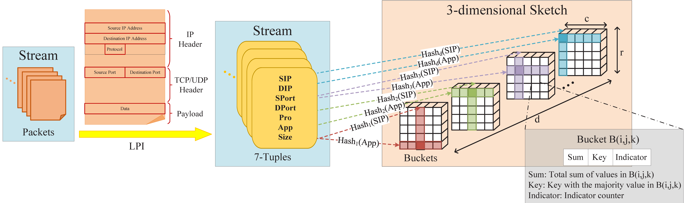

DMatrix: 图流数据快速统计
本网站展示了我们的论文“DMatrix: Toward fast and accurate queries in graph stream”的部分数据，该论文发表于“Computer Networks”。
流量测量工具
本工具是基于DMatrix构建的流量测量工具，用于应用流量的统计、查询和分析。

Top应用和Top用户
该流量测量工具可以获取特定时间窗口内的top应用和top应用，下图给出统计数据。


Top用户偏好的Top应用
该流量测量工具可以分析top用户使用的top应用。左表给出了这些top应用、相应的流量以及占比。右表分析了占比较重的HTTPS/HTTP流量的可能访问目标。